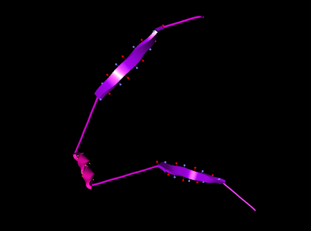
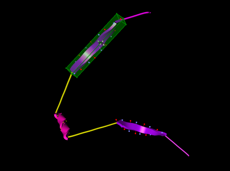
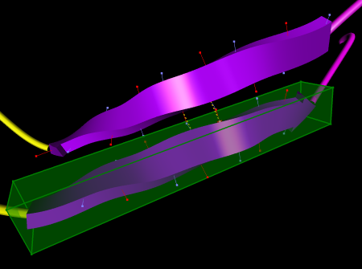
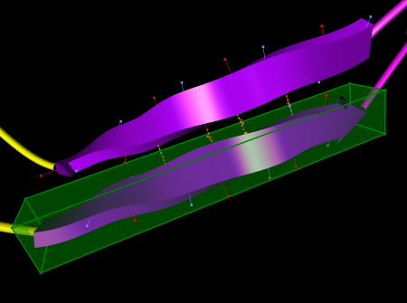
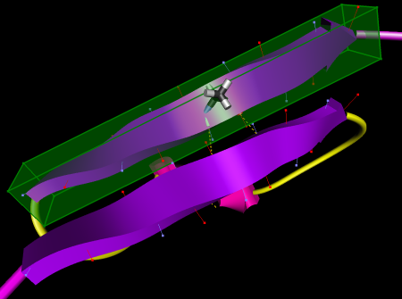
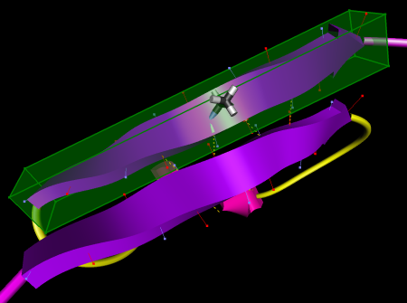

Semi-automatic Hydrogen Bonding
The direct manipulation method described in Section 1.3.5 is sufficient to create arbitrarily complex protein structures, but it is somewhat tedious to use for the common task of aligning beta-strands into beta-sheets by forming hydrogen bonds between adjacent strands. ProteinShop provides a semi-automatic method to form coarse strand alignments, which can then easily be fine-tuned using manual interaction.
The basic idea behind this approach is to first decide on an alignment pattern between two strands - parallel or anti-parallel - and then to select two amino acid residues, one in each strand, to form a pair of hydrogen bonds appropriate for the selected alignment pattern. The sequence of steps involved to form an alignment is identical for both alignment patterns (see Figures 1 and 2 for a sequence of images for both cases):
- Select one of the beta-strands to be aligned.
- Activate coil regions between the selected beta-strand and the one it is to be aligned with (let's call the latter one the "other" strand).
- Select an amino acid residue "A" inside the selected beta-strand.
- Press the X hotkey to form an anti-parallel alignment, or the Y hotkey to form a parallel alignment.
- Select an amino acid residue "B" inside the "other" strand. This residue must be selected by holding down the <Alt> modifier key and clicking the left mouse button over the visualization of the residue in the main display window (the "Residue index" slider in the Residue Dialog can not be used). For the semi-automatic method to work, it is important that all active coil regions are between the selected strand and the other strand. If this is not the case, surprising things might happen. Of course it is possible to undo any ill effects if something went wrong.
- Stand back as the selected strand moves towards its alignment position/orientation with the other strand. After the animation is complete, the two strands should be connected by one pair of hydrogen bonds.
- After completion, the amino acid residue "A" will still be selected. This means that the 3D interaction widget's center of rotation is set to the midpoint of A's two hydrogen bond sites. Thus, it is now easy to form additional hydrogen bonds between the two strands manually, without breaking the coarse alignment.
| (a)  |
| (b) |
| (c)  |
| (d)  |
| (e)  |
| Figure 1: Sequence of steps involved in forming an anti-parallel beta-sheet by semi-automatic hydrogen bonding. (a) Initial protein structure rendered as structure cartoons with hydrogen bond sites. (b) After selection of one beta-strand, and activation of coil regions between the selected and the other strand. (c) After selection of an amino acid residue inside the selected strand. (d) Result of semi-automatic alignment; one hydrogen bond pair has been formed. (e) Result of manual fine-tuning; two additional hydrogen bonds have been formed. |
| (a) |
| (b) |
| (c) |
| (d)  |
| (e)  |
| Figure 2: Sequence of steps involved in forming a parallel beta-sheet by semi-automatic hydrogen bonding. (a) Initial protein structure rendered as structure cartoons with hydrogen bond sites. (b) After selection of one beta-strand, and activation of coil regions between the selected and the other strand. (c) After selection of an amino acid residue inside the selected strand. (d) Result of semi-automatic alignment; one hydrogen bond pair has been formed. (e) Result of manual fine-tuning; two additional hydrogen bonds have been formed. |